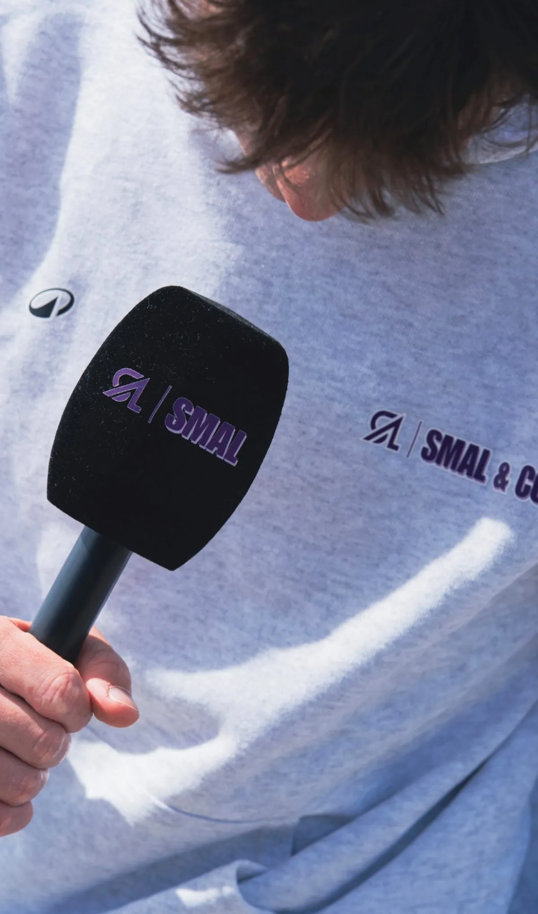
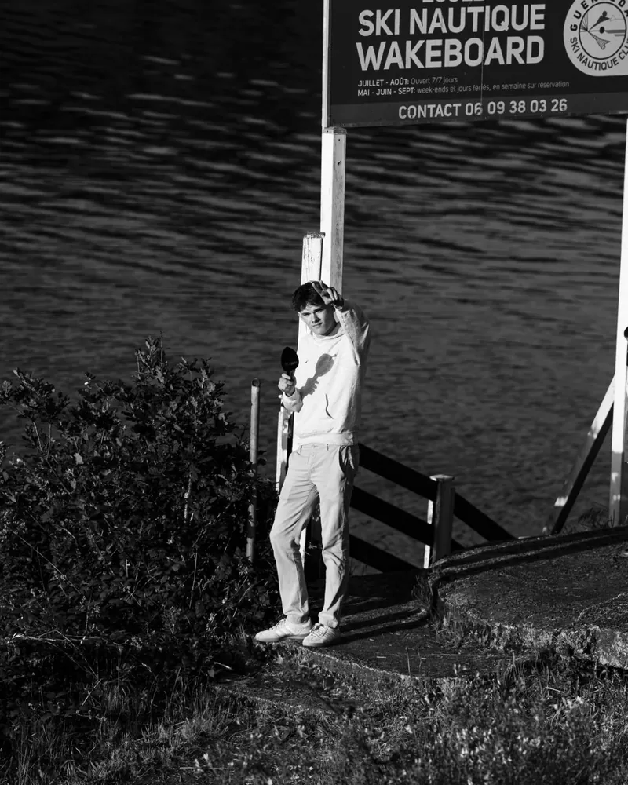
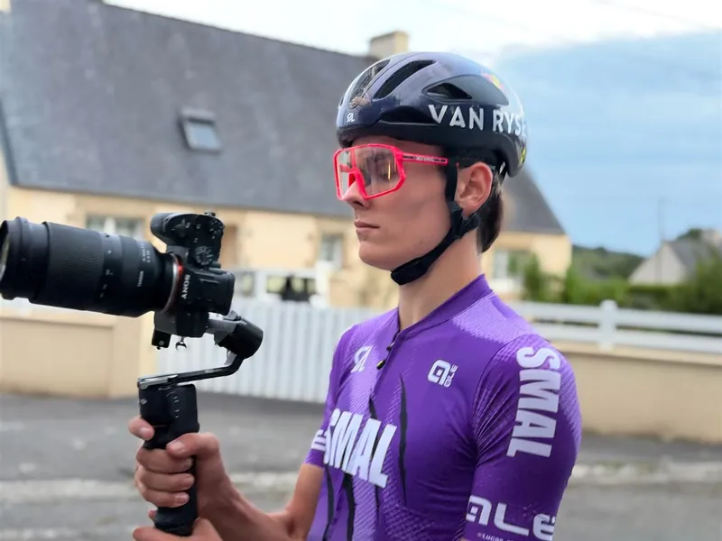
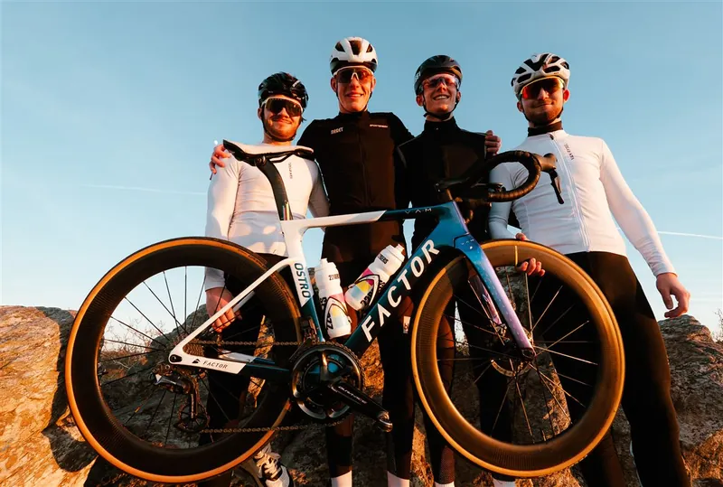
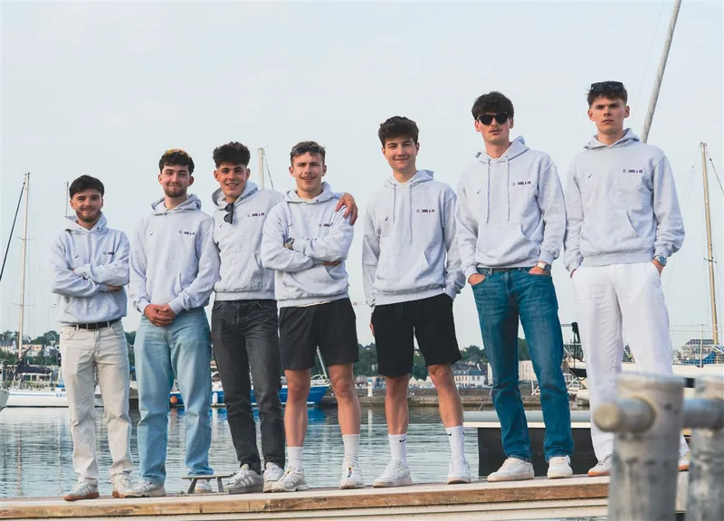
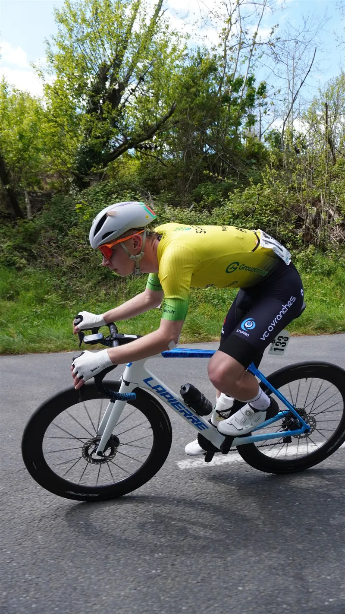
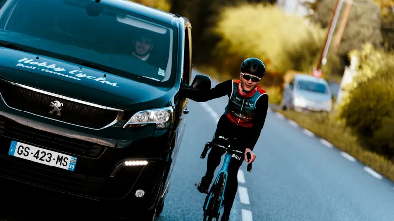
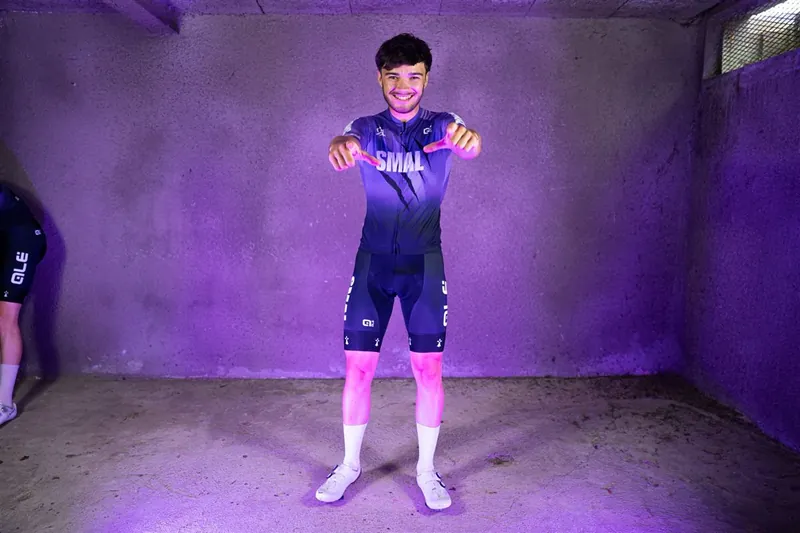
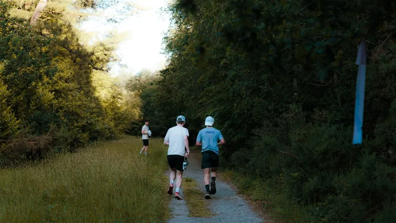
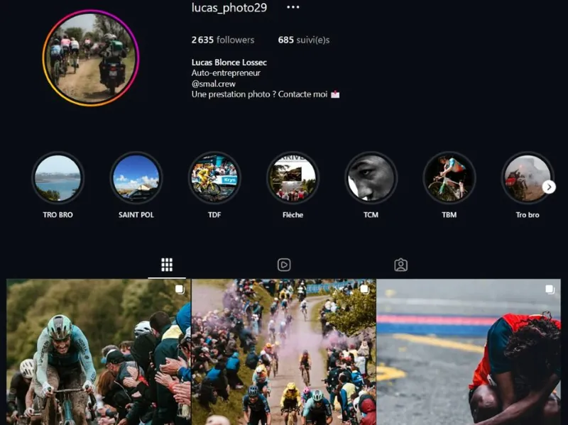

Pôle 04 · Studio & contenus
Raconter le sport de l’intérieur.
Captation de course, immersion au cœur des pelotons et production audiovisuelle dédiée.


Nos missions
Des histoires bien filmées.
- @smal__co
- Formats
- Reels · TikTok · Photo · Vidéo
- Audience
- 160,7 K vues de profil sur 30 jours
Source : Instagram, octobre 2026
Raconter nos athlètes avec exigence : chaque course, chaque sortie, chaque coulisse devient un contenu.
Valoriser nos partenaires auprès d’une communauté sportive locale, engagée et fidèle.
Proposer nos services de captation et de communication aux organisateurs d’épreuves cyclistes.
Réalisations
Ce qu’on a produit
Couverture de courses
Trophée Centre Morbihan, Penn ar Bed, Sébaco : Reels et TikTok de chaque épreuve.
Interviews
Micro SMAL & CO en main, au contact des coureurs et des organisateurs.
Identité visuelle
Logo, palette violette et shooting de lancement sur les rochers de Brest.
Shooting maillot
Studio lumière violette et tournage sur route pour dévoiler la tenue.
Étape du Tour
Un plan de contenu complet pour suivre nos sept membres.
En action








Projets
Ce qu’on prépare
- Développer la communication autour de nos futures équipes
- Couvrir la saison de compétition 2027
- Développer les prestations de captation pour les organisateurs
- Continuer à produire des contenus de qualité pour nos partenaires
Un projet à mettre en valeur ?
Organisateur d’épreuve ou marque : parlons captation et contenus.
Droits d’auteur et prestations
Derrière nos images : Lucas, co-fondateur du collectif et photographe professionnel.
Une course, un événement sportif ou une prestation photo sur mesure ? Écrivez-lui directement :
